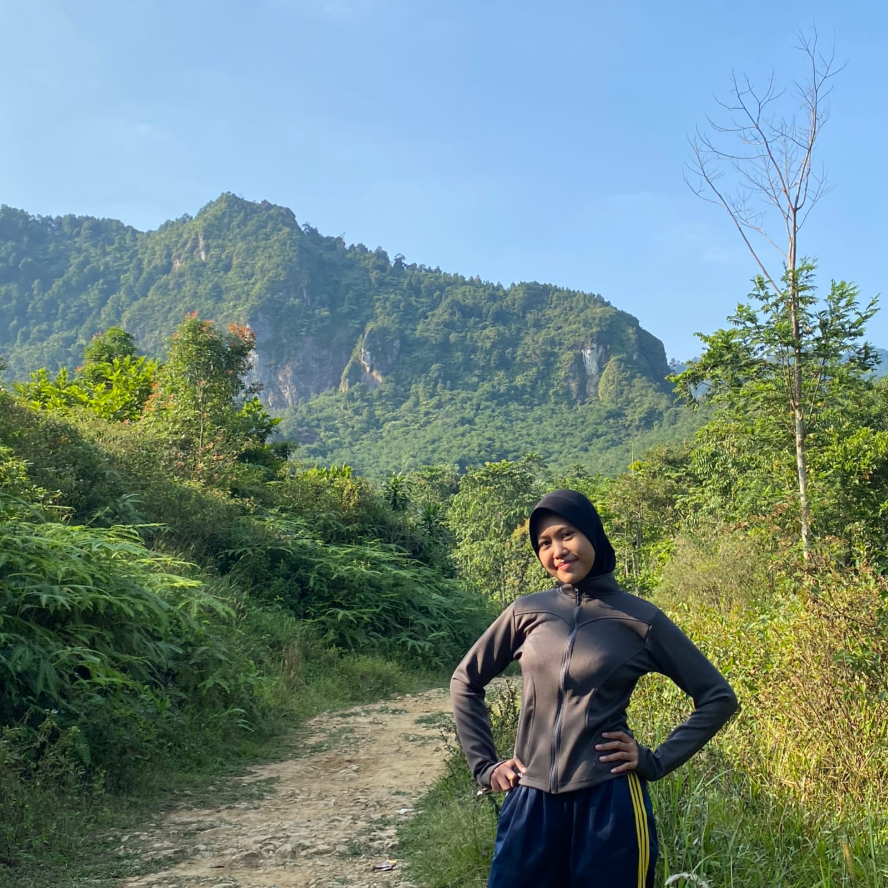
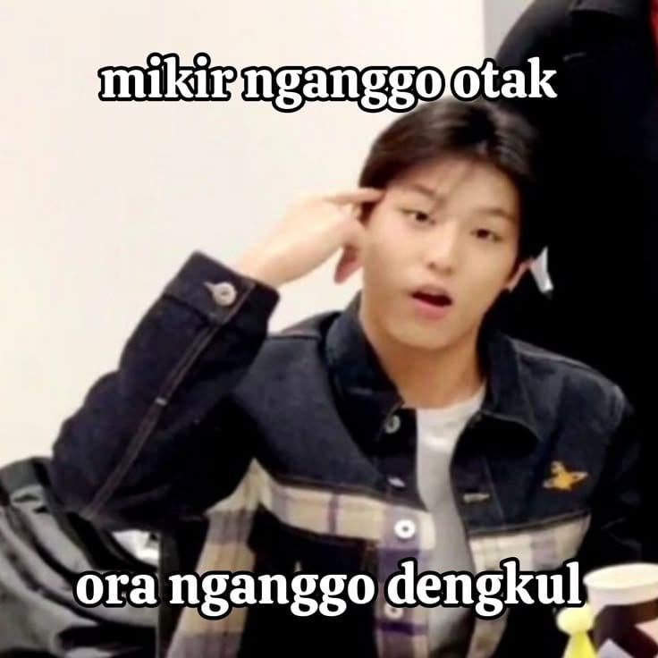
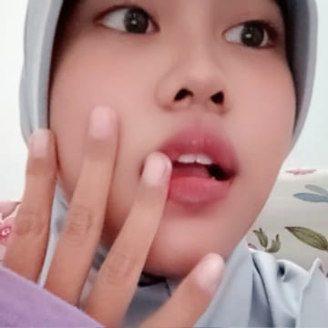

Scroll pelan-pelan, soalnya di bawah ada cerita, video, dan foto yang sayang kalau kelewat.📸🎶
Nama: Khezia Azzahra Putri
NIM: 0110226074
Program Studi: Teknik Informatika
Email: kheziaazzahraputri@gmail.com
Telepon: 085712009163
Halo, aku Khezia Azzahra Putri, biasa dipanggil Zia. Aku tinggal di Bekasi dan sekarang kuliah di STT NURUL FIKRI Program Studi Teknik Informatika. Sebelumnya aku sekolah di SMKN 7 Kota Bekasi jurusan Teknik Audio Video, jadi aku sudah kenal dunia elektronika, mulai dari merakit dan menyolder komponen sampai memakai alat ukur. Sekarang aku lagi seru-serunya belajar bikin website lewat tugas praktikum ini. Di luar kuliah, aku suka banget dengerin musik, terutama lagu-lagu TREASURE. Aku juga penggemar Americano, rasanya susah mulai hari tanpa segelas kopi itu. Waktu SMK aku pernah PKL di PT Panasonic Manufacturing Indonesia, dan aktif jadi bendahara ekstrakurikuler Paskibra, jadi aku terbiasa kerja tim dan belajar hal baru dengan cepat.


